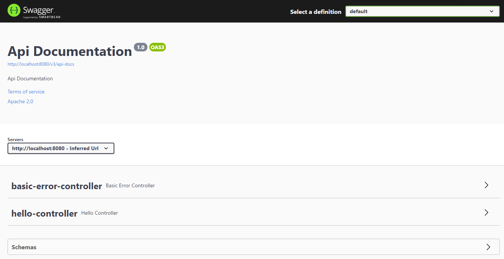
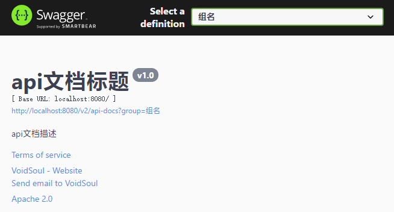
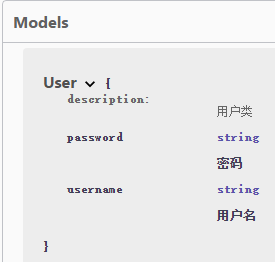
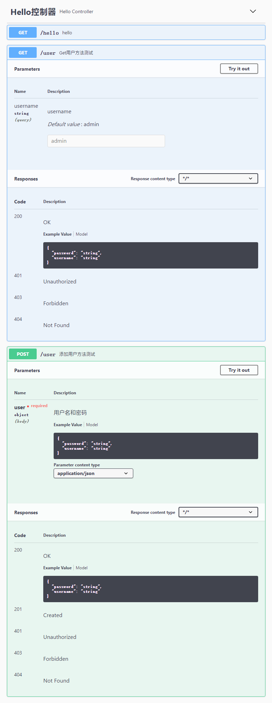

一、引言
前后端分离开发的项目，前端通过访问后端接口来进行交互，此时一份规范、实时的API文档显得十分重要。
历史（翻译自Swagger官网）：
2010年，Swagger最初是一个简单的开源规范，用于设计RESTful APIs。还开发了Swagger UI，Swagger Editor和Swagger Codegen等开源工具，以更好地实现和可视化该规范中定义的API。由规范和开源工具组成的Swagger项目变得非常流行，从而创建了一个由社区驱动工具组成的庞大生态系统。
2015年，Swagger项目被SmartBear Software收购。Swagger规范捐赠给Linux基金会，并更名为OpenAPI。
这个规范，用以规范REST API的描述方式。创建OpenAPI提倡旨在以开放和透明的方式指导OAS（办公自动化系统）的发展。
自那以来，Swagger已成为最受欢迎的工具套件，可以在整个API生命周期中充分利用OAS的功能。
二、简介
1、关于OpenAPI
OpenAPI规范（以前是Swagger规范）是RESTful APIs的一种API描述格式。OpenAPI文件允许您描述整个API，包括：
- 允许端点（
/users）和每个端点上的操作（GET /users、POST /users） - 每个操作中操作参数的输入和输出
- 身份认证方法
- 联系信息、许可证、使用条款和其他信息
API规范可以用YAML或JSON格式编写。这种格式易于学习，对人和机器都是可读的。完整的OpenAPI规范在GitHub上：OpenAPI 3.0规范
2、关于Swagger
Swagger是一组围绕OpenAPI规范构建的开源工具，可以帮助您设计、构建、记录和使用REST APIs。主要的Swagger工具包括：
- Swagger编辑器：基于浏览器的编辑器，你可以编写OpenAPI规范。
- Swagger UI：将OpenAPI规范呈现为交互式API文档。
- Swagger Codegen：根据OpenAPI规范生成服务器存根和客户端库。
在Swagger的Github仓库中可以注意到Swagger的核心是由Java编写的
3、SpringFox？Swagger-Springmvc！
要在Springboot程序中使用Swagger，必然会用某种方式去集成它，很多Springboot集成Swagger的教程中，Swagger包名前面都会有一个springfox的前缀，那么这个springfox是什么呢？SpringFox的参考文档中说明了由来：
Springfox最初是从Marty Pitt创建的一个叫swagger-springmvc的项目逐渐发展而来的
Springfox套件的java库都是为了自动生成并使用spring系列项目编写的JSON API的机器和人类可读规范。Springfox的工作方式是在运行时对应用程序进行一次检查，根据spring配置、类结构和各种编译时java注解来推断API语义。通常来说，这种方式就是AOP
三、与Springboot的整合与使用
注：以下整合方式基于Springfox3.0版本，与2.X有较大差异，具体可查阅参考文档中的2.1.3.从现有2.x版本迁移
1、准备工作
首先创建一个springboot项目（通过IDEA的Spring Initializr），依赖选项至少勾选一个spring-boot-starter-web，可选lombok和spring-boot-devtools，然后导入springfox的依赖如下：
1 | <dependency> |
写一个“hello world”测试一下：
1 |
|
2、开启Swagger
官方的参考文档中3.快速入门指南的示例是完整的配置，使用了@ComponentScan是因为控制器类不在启动器类的同一个包或子包下，我们一般情况下开发的项目不需要这样，所以简单的使用如下即可：
1 |
|
实际上，在springfox3.0版本中无需任何配置即可使用，因为在springfox-boot-starter包中已经按springboot的规范写好了自动配置类OpenApiAutoConfiguration：
1 |
|
启动项目，访问http://localhost:8080/swagger-ui/index.html或者http://localhost:8080/swagger-ui/（注意后面这个最后必须有/否则会404）
默认配置下这就是swagger-ui的界面了，上面的很多内容都可以自定义配置

3、配置
3.1.api信息
Springfox使用了一个
Docket对象来记录服务的信息，这样做是为了更加符合文档的表达内容与呈现格式无关的情况。
Docket表示对文档内容的概述或其它的简要说明，它有助于配置要记录的服务子集，并按名称进行分组。这方面的重要变化是能够为api选择提供一个基于表达式的predicate
接着上面的Swagger2Config配置类，增加一个Docket的bean即可
1 |
|
配置好后，再次访问swagger-ui界面：

3.2.predicate(判断式)
关于前面提到的predicate，这里特指数学逻辑上的predicate，在查阅资料和使用后发现这是一个比较抽象的概念。以下引用自wiki百科
In mathematical logic, a predicate is commonly understood to be a Boolean-valued function P: X→ {true, false}, called a predicate on X. However, predicates have many different uses and interpretations in mathematics and logic, and their precise definition, meaning and use will vary from theory to theory. For example, when a theory defines the concept of a relation, a predicate simply becomes the characteristic function (otherwise known as the indicator function) of a relation. However, not all theories have relations, or are founded on set theory, and so one must be careful with the proper definition and semantic interpretation of a predicate.
简单来说，predicate的一种简单的表达形式则是布尔值函数，即自变量x映射到因变量y，y的取值是true或者false。
而在java中则是jdk8的函数式编程特性之一，这里就不再详解了，具体可查阅参考文档：Predicate接口
3.3.接口扫描
上述配置默认是扫描的所有接口，包括springboot自带的basic-error-controller，如果想自定义扫描的接口，可以使用如下方式：
1 |
|
apis()只接受RequestHandler类型的Predicate，这里使用RequestHandlerSelectors，它有以下几个公共的静态方法：
any()，任何RequestHandler都满足条件none()，与上面相反withMethodAnnotation()，将RequestHandler与给定的处理方法上的注解进行匹配withClassAnnotation()，将RequestHandler与给定的处理类上的注解进行匹配basePackage()，匹配RequestHandler和给定的处理方法的类的基本包名（即类所在包的全路径）的predicate，这个predicate会匹配包括所有给定的basePackage的RequestHandler。
paths()和上面的相似，只接受String类型的Predicate，这个类是基于url的选择器，可以使用PathSelectors，同样的，PathSelectors有如下几个方法：
any()，任何路径都满足条件none()，没有路径满足条件regex()，基于正则表达式的路径匹配ant()，基于Ant样式的路径匹配表达式
3.4.摘要与描述
可以使用注释来对接口方法和实体类模型进行补充描述。对于使用注解，springfox官方是这样的：
从哲学上讲，我们不鼓励使用（swagger-core）注解在运行时对服务进行不重要的描述。例如，jackson的注解应始终优于@ApiModelProperty或具有比@ApiModelProperty更大的权重，例如@NotNull或具体的@RequestParam#required应总是优先的。注解只能用于补充文档、重写或调整结果规范，以防止无法推断服务或模式的特征。
示例：
1 |
|
@ApiModel和@ApiModelProperty使用于实体模型类上，如果这个类在控制器中有使用，会在swagger-ui中显示

控制器示例：
1 | (tags = "Hello控制器") |
@Api在类上使用，默认的value则没有在ui上显示，而tags旁边的description属性被弃用了。@ApiOperation则是在方法上使用
需要注意的是，spring-web一些注解的属性，例如@RequestParam的defaultValue也会被解析到ui上
